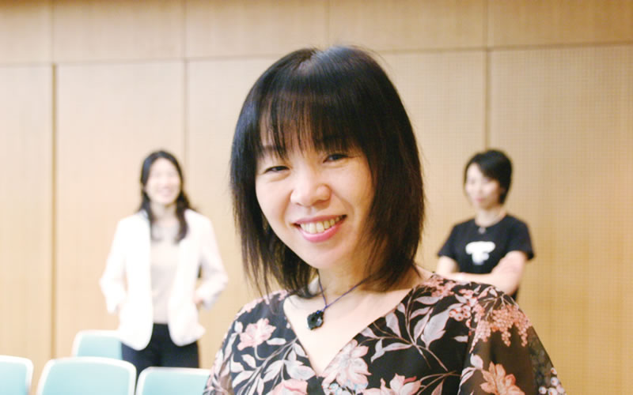

岩崎靖子(映画プロデューサー・映画監督)
'; $array[] = '南ぬ風人まーちゃんうーぽー(音楽アーティスト)
'; $array[] = '入江富美子(映画プロデューサー・映画監督)
みなさま、いつも応援していただきありがとうございます。
にぽぽさん、そしてしまへいちゃんはじめ、「チーム宇宙の約束」のみなさま、
そしてそれを支えるみなさま、また映画に来てくださるすべてのみなさまに心から感謝しています。
にぽぽちゃんには、ずっと映画を応援していただいていましたが、
今年になって「やっと入江さんの伝えたいことがわかってきたよ！入江さんに話をしてもらう機会を絶対作るよ」
とあらためてメッセージをもらいました。
とてもうれしかったのを覚えています。
魂のところで近づけた気がしました。
そんなにぽちゃんが天に旅立ち、今でも時々にぽちゃんのことを考えます。
「にぽちゃんは自分の役割の大きさを知って、天から動こうって思ったのかな」
そんな風に思わせていただくほどに、にぽちゃんの愛は大きいのです。
そんなにぽちゃんが心から望んだ「ゆずりは」の上映会。
追悼の意も込めたこのイベントに何をおいてでも参加させていただこうと思いました。
実行委員のみなさま、スタッフのみなさま、本当にありがとうございます。
そして一人でも多くの方に、このイベントにご参加いただけたらうれしく思います。
ありがとうございました。
入江富美子
山元加津子(特別支援学校教諭)

にぽぽちゃんが、したいと思っていたイベントを、
たくさんの仲間が想いをひとつにして、一緒に行おうとされていることに、
胸がいっぱいになります。
わたしもできるなら、とんでいきたい。
イベントにきて下さったみなさんに、スタッフのみなさんに、にぽぽちゃんを大好きなものの一人として、心から感謝しています。
大好きなにぽぽちゃんが亡くなって、それでもにぽぽちゃんのことを忘れたことはありません。にぽぽちゃんの仲間のみなさんがにぽぽちゃんがいつか「ゆずりは」というイベントをしたかったという思いをかなえようと、７・１３土曜に、ゆずりはというイベントをされるそうです。
いったいにぽぽちゃんがしたかった映画、ゆずり葉ってどんな映画なんでしょう。
・・・・・・・・・・・・・・・・・・・・・・・・・・・・・・
「ゆずり葉」ある夏の暑い日の工務店。
63歳のベテラン大工、敬一（聾）が突然倒れた。
入院を拒む敬一は、最愛の恋人を病気で亡くした過去を引きずっていた。
それは昭和40年代にさかのぼる。字幕がついていなかった映画を敬一の耳になって通
訳してくれた早苗と将来を約束するものの、早苗の両親はろう者である敬一との結婚
を決して許さなかった。「私たちにも運転免許を！」ろうあ者の権利を訴える運動の
記録映画を撮影していた敬一が夜遅く帰宅したとき、早苗が意識不明で倒れていた。
敬一の子どもを身ごもっていた早苗は息を引き取ってしまったのである。
30余年たった1999年、その年は運転免許や民法11条改正などを勝ち取ってきたろう者
と手話通訳者の差別法令改正運動が頂点に達した年でもあった。全国からの署名が
150万を超えるとき、運動家の大川は早苗の死で中断した記録映画を、この大きなう
ねりの中で完成させたいと、敬一に続きを撮ってほしいと訴えた。すでに肺がんに侵
されていた敬一は迷った。そんな時、敬一は薬剤師試験に合格しながらも欠格条項に
より国家資格を却下された尚美（聾）に出会う。また自分の気持ちを舞台で表現した
くてもオーディションになかなか受からないでいる吾朗（聾）にも出会った。いま自
分がやらなくて誰ができるというのだ！このまま何もしないで天国で早苗に合わせる
顔があるのか。敬一はカメラをもって立ち上がった。記録映画を完成させて次の若い
世代に手話と仲間の大切さを伝えていくために。
・・・・・・・・・・・・・・・・・・・・・・・・・・・・・・
このイベントの日は、体当たりのお優さんやあやちゃん、かなとくん。
そして（たけ）ちゃんと一緒のたけちゃんとお母さんのあやちゃんや、
歌を歌われるみほちゃん、そしてしまへいちゃんやみなさん勢ぞろいでおでむかいされるそうです。
私は行くことはかなわないけれど、心は会場へ出かけます。
かつこ